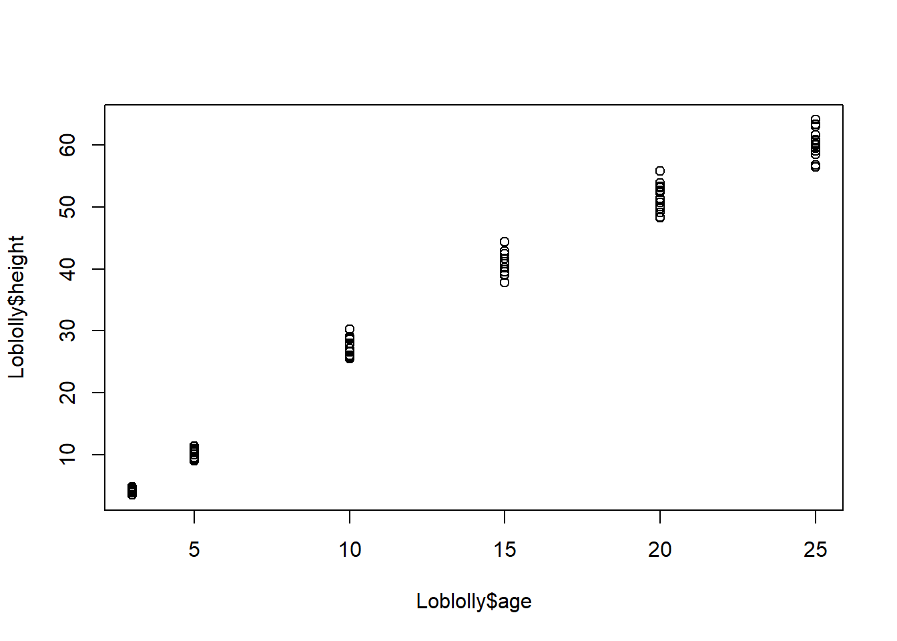
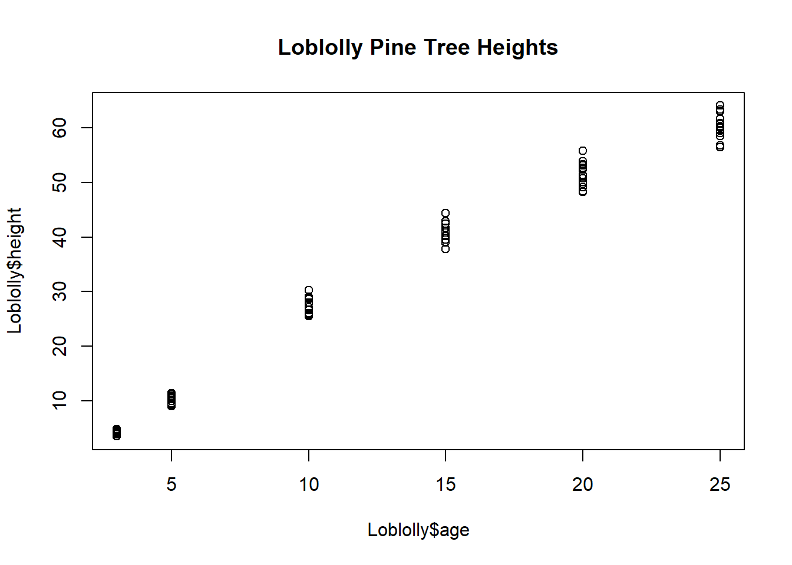
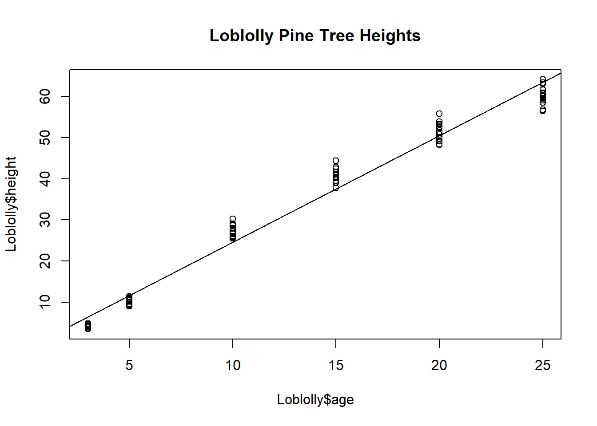
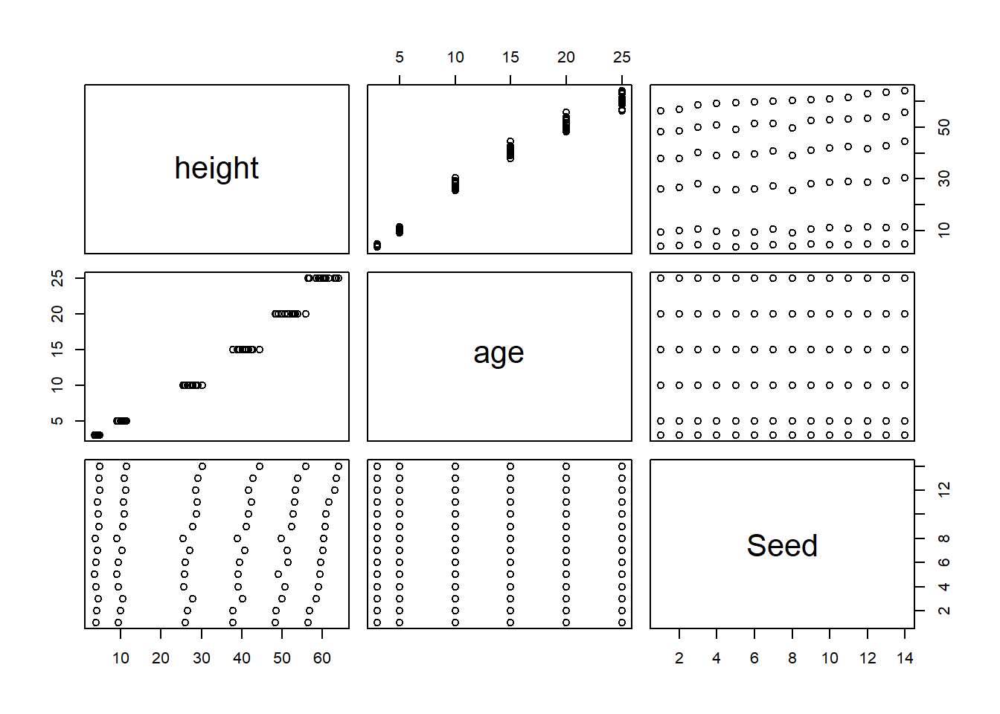

13 Quick Linear Regression
13.1 Quick Linear regression using Loblolly
- load
Loblollyand create a scatter plot of the data so plot so that age is the independent variable and height is the dependent variable.

- Notice that R automatically labeled the x- and y-axes, but we also want our scatter plot to
have a main title. To add a title, use the command
title(main = “Loblolly Pine Tree Heights”).

- To find a linear model that relates the age and height of the loblolly pine trees, we will use the
command
fit1<-lm(Loblolly$height~Loblolly$age).
Think of
lm(Loblolly$height~Loblolly$age)as the slope-intercept form (y=mx+b).
- To see the model, type
fit1
fit1 <- lm(Loblolly$height~Loblolly$age)
fit1
#>
#> Call:
#> lm(formula = Loblolly$height ~ Loblolly$age)
#>
#> Coefficients:
#> (Intercept) Loblolly$age
#> -1.312 2.591- Now we want to add the graph of this line of best fit to our scatter plot. To do this, use the
command
abline(fit1). .

- The final piece of information we want about our data is the correlation of the age and height
of the Loblolly pine trees. To find the correlation coefficient, use the command
cor(Loblolly$height, Loblolly$age)
#> [1] 0.9899132
#>
#> Pearson's product-moment correlation
#>
#> data: Loblolly$height and Loblolly$age
#> t = 63.272, df = 82, p-value < 2.2e-16
#> alternative hypothesis: true correlation is not equal to 0
#> 95 percent confidence interval:
#> 0.9844505 0.9934631
#> sample estimates:
#> cor
#> 0.9899132- What does this command do and mean:
plot(Loblolly)?
